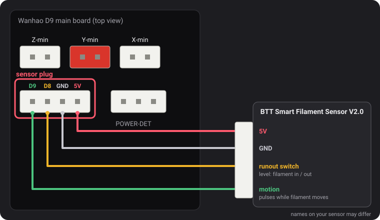

Filament sensors
From v2.0.5 these firmwares read two kinds of sensor: Wanhao's runout switch, and the BTT Smart Filament Sensor V2.0, which also notices when the filament stops moving (tangled spool, jam, stripped filament). Detection is off until you turn it on, except for the runout switch on the MK3.
The sensor plug

The 4-pin plug to the left of POWER-DET, below the endstop plugs, carries D9, D8, GND and 5V, in that order. The pin names come from a wiring diagram by Wanhao that dustovich found and shared on the Discord; the back of the board prints the same four pins as CTRL, BTN, GND and VCC.
- D8 is the runout input Wanhao's own firmware reads.
- D9 is not used by Wanhao's firmware: these builds read the BTT sensor's motion signal on it.
The M412 commands
Everything is set over USB from a serial terminal (Pronterface, the terminal of your slicer or of OctoPrint,
250000 baud). Parameters can be combined in one command, for example M412 S1 L10.
| Command | What it does |
|---|---|
M412 | Shows the state, for example Filament runout ON ; Distance 5.00mm ; Motion distance 0.00mm. |
M412 S1 | Turns detection on: the runout switch, and jam detection too if the jam length is not 0. |
M412 S0 | Turns all detection off, switch and jam. |
M412 D5 | Once the switch sees no filament, keeps printing 5 mm before pausing, to use the filament left between the sensor and the nozzle. Default 5 mm. |
M412 L10 | Turns jam detection on (BTT sensor only): pauses when 10 mm of filament go through the extruder without the sensor's wheel moving. |
M412 L0 | Turns jam detection off and leaves the runout switch as it is. This is the default. |
M500 | Saves the settings. Without it, a change is lost when the printer is switched off. |
M119 | The filament line reads TRIGGERED with filament loaded, open without. |
M412 L0, and L used on its own, come from our change to Marlin
(MarlinFirmware/Marlin#28585), built into these firmwares. In Marlin without it, L
alone is ignored and L0 pauses the print as a jam at once.
Wanhao's runout switch
It tells the firmware whether filament is there. When it goes missing, the print pauses after 5 more mm of filament and the screen starts a filament change. It is on by default on the MK3.
M412 S1
M500Jam detection stays off (L0), since this switch cannot see filament move. To turn the switch off:
M412 S0 then M500.
BTT Smart Filament Sensor V2.0
This sensor has two outputs, and the firmware reads them differently:
- The runout switch (to D8) is a level: 5 V while filament is there, 0 V once it has gone.
- The motion output (to D9) comes from a small wheel the filament turns as it passes. Each few millimetres of filament, the output flips between 0 V and 5 V. The firmware only watches for those changes: if the extruder pushes the jam length of filament without a single one, the filament is not following (tangled spool, jam, stripped filament), and the print pauses. The runout switch cannot see that: during a jam the filament is still there.
Wiring
5V to 5V, GND to GND, the runout switch signal to D8 and the motion signal to D9. The names printed on the sensor's cable may differ.
Turning it on
M412 S1 L10
M500If prints pause without a reason, raise the jam length: M412 L15 then M500. To keep only
the runout switch: M412 L0 then M500.
Checking it
M412: Filament runout ON ; Distance 5.00mm ; Motion distance 10.00mm.M119with filament loaded: filament: TRIGGERED. If that line changes while you push filament through by hand instead of when you insert or remove it, the two signal wires are swapped: swap D8 and D9.
L0 never
does), but not yet with the BTT sensor itself. If the switch reads the wrong way round (open with filament
loaded), tell us on Discord.Updating from v2.0.5 or v2.0.6
Those releases had no way to turn jam detection off, so they used a jam length too long to ever be reached: 100 m in
v2.0.5 (too short in fact: about a third of a 1 kg spool, after which a printer left on could pause for nothing) and
10 km in v2.0.6. When the printer starts, v2.0.7 loads those two values as L0. A real length you set
for a BTT sensor, such as L10, is kept. From v2.0.4 or earlier, the 5 mm runout distance is loaded
instead of the 0 those versions saved.